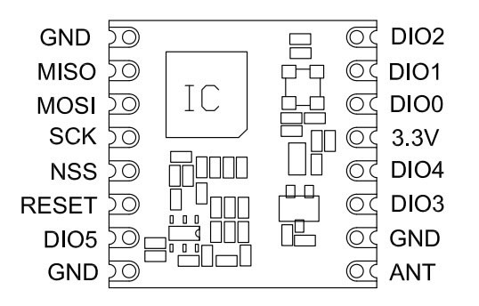
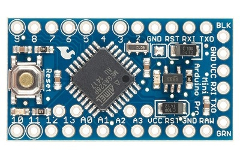

Some week sago I started a project to get the full LMIC stack on a Atmega 328 based MCU. Initially, after a lot of effort it was possible to compile the code on an Arduino Pro-Mini, but there was no room left to execute any meaningful code on such node.
Therefore I decided to remove the original AES encryption code from LMIC and merge the LMIC code with another AES library. Since I had experience with the Ideetron code I ported teh Encryption part of that code to the LMIC stack. The result was a much smaller and cleaner implementation of the encryption functions and a stack that fitted the Atmega 328 MCU leaving more than 400 bytes of memory and 4K of flash to run sensor code.
So let's make our own mini node based on a cheap Arduino Pro-Mini MCU ($ 2.00 on Aliexpress), a HopeRF95, a HTU21d temperature/humidity sensor ($4.00) and some resistors. Based on the LoRaWAN software and library sketches it should be possible to make your own "Thing".

And the Arduino Pro-Mini looks like this. It's pin out is clearly marked on the outside of the board (that is, until I start to solder pin's to it).

In order to operate the Pro-Mini you only need to attach a 3.3Vdc battery to pin's VCC and GND, however for downloading the sketch program you probably also want to solder pins to the 6-pin USB/FTDI interface to the right.
Pin-out for use with an Arduino ProMini:
| Arduino | Arduino Pin | RFM95 | Color |
|---|---|---|---|
RST |
RST | RESET | -- |
| VCC | 3.3V | red | |
| GND | GND | ||
| D4 | 4 | DIO0 | |
| D5 | 5 | DIO1 | |
| D6 | 6 | DIO5 | |
| D7 | 7 | DIO2 | |
| D10-SS | 10 | NSS | |
| MOSI | 11 | MOSI | |
| MISO | 12 | MISO | |
| CLK | 13 | SCK |
As you can see in the picture of the Arduino ProMini below (actual boards might differ a bit) we need pins at both sides of the board so left of right orientation of the RFM95 is less important.
There are special adapter cards and boards available for tge RFM95w, but if we would wire and solder connections we need 10 wires.
As you can see, it is possible to make a real small sensor.
If we would like to make a simple node that can report temperature and humidity and runs on normal batteries we need to do some special tings as well:
Please read on Page 2 how to transform the node to a sensor
{kind=link}